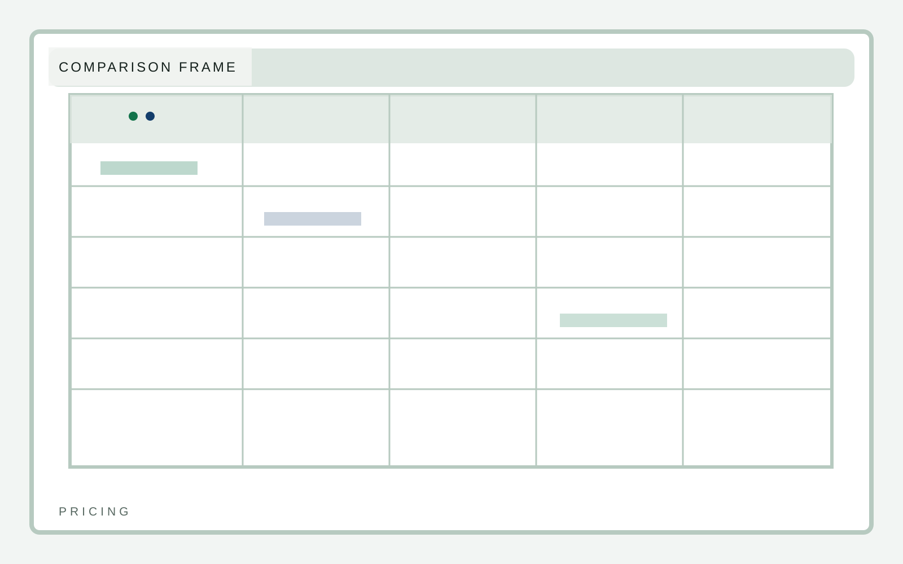

Activation
Fast team rollout
B2B software
A software marketing template that puts product UI, workflow clarity, and proof structure ahead of the usual startup chrome. Comparison must survive screenshot review without collapsing into clutter.
B2B software
Plans should be easy to parse in still frames. The layout has to survive mobile without turning into mush.
Fast setup for a small team
Expanded workflow depth
Advanced governance and support
B2B software
Comparison is only useful if the hierarchy is sharp enough for a fast screenshot read.
| Item | Signal | Implication |
|---|---|---|
| Primary frame | Clear hierarchy | Faster comprehension |
| Section density | Measured text load | More trust, less filler |
| Visual rhythm | Deliberate cadence | Memorable still frames |

B2B software
SignalStack turns faq into product storytelling with interface gravity, operational proof, and a cleaner structure than most SaaS boilerplate. This pricing page stays consistent with the template system while giving this section its own visual weight.